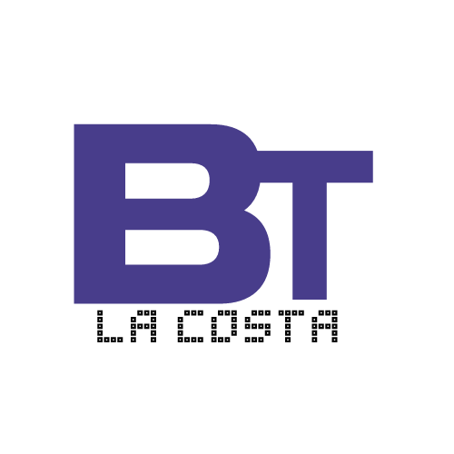

¡Bienvenido!
Encuentre las mejores ofertas laborales y halle ¡su puesto ideal!, o si busca candidatos para sumar a su empresa sientase libre de explorar para encontrar a los que mas se ajusten al perfil deseado.

Si buscas trabajo o canditados para tu empresa ¡BT La Costa es tu mejor opción!
- Los anuncios pueden filtrarse por localidades.
- Publicaciones odenadas en distintas secciones.
- El usuario empleador tendra su publicación destacada.
- Esta plataforma ofrece seguridad y confianza.
¡Las ofertas laborales con anuncios destacados!
- Publica tu vacante fácilmente en sencillos pasos.
- Encuentra al candidato ideal para el perfil deseado.
- El usuario estandar puede compartir ofertas.
¡Como usuario estandar puede ofrecer sus servicios!
- No espere a publicar las tareas que puede realizar.
- Hay usuarios que pueden necesitar a alguien como usted.
- ¡Demuestre que tan profesional es!.
Navegue en nuestros listados de publicaciones en diferentes secciones
Vista previa de ofertas
Vista previa de servicios
¿Quiénes somos?
BT La Costa es una web que ofrece una herramienta más que aporta información sobre la bolsa de trabajo en el Partido de La Costa, destacando las publicaciones de reclutadores y división entre oferta y demanda. De esta forma se obtiene facilidad a la hora de buscar anuncios disponibles filtrando la búsqueda. BT La Costa logra una comunicación fluida entre los usuarios de la plataforma, donde además se brindará seguridad y autenticación de cuentas, mayormente para que las publicaciones que harán los usuarios sean confiables y compartidas sin preocupación.
¡Seguinos en nuestras redes sociales!